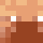

Gameplay · 0.2
Souches et capacités
Comparez les douze formulaires intégrés et leurs trois capacités.
Forces et faiblesses
| Souche | Le bien | Le mauvais |
|---|---|---|
| Plus de santé, d'armure et de dégâts, se régénère dans l'obscurité, immunisé contre la faim | 12 % plus lent, brûle au soleil, n'arrive pas à dormir ; viande uniquement sous sa forme complète | |
| Flèches plus fortes, vision nocturne, immunisé contre le poison et la faim, chutes plus douces | Moins de santé, les explosions font plus mal, brûlent au soleil, je n'arrive pas à dormir | |
| Prend moins d'explosions, plus rapide, armure supplémentaire, les creepers vous laissent tranquille | Peur des chats, le feu fait plus mal | |
| Grimpe aux murs, marche à travers les toiles d'araignées, saute plus haut, voit dans le noir | Le feu fait plus mal, impossible de porter un casque de stade IV | |
| Pas sur des blocs complets, plus de santé et de dégâts, les flèches vous frappent moins | Brûlures d'eau et de pluie | |
| Nage vite, respire et voit sous l'eau | Lent sur terre, brûle au soleil ; sous sa forme complète, il sèche après trois minutes loin de l'eau | |
| Le feu ne peut pas vous blesser à partir du stade III, les mouches à partir du stade IV, les chutes plus douces | L'eau et la pluie vous brûlent et vous écrasent, les flèches font encore plus mal | |
| Corps léger, vision nocturne, le vol le plus rapide du stade IV | Moins de santé, brûlures au soleil, pas de plastron sur les ailes | |
| Les cultures poussent plus vite autour de vous, vole à partir du stade IV, ressent à peine une chute | Moins de santé, nourriture sucrée uniquement, la pluie vous immobilise | |
| Plus rapide, mord plus fort, la viande crue et pourrie est très bien | Viande uniquement, peur des lamas, le feu fait plus mal | |
 Piglin | Les Piglins vous traitent comme l'un d'eux, pas besoin d'or. Le feu fait moins mal, plus de santé et de dégâts | Je ne peux rien jeter d'or, j'ai peur des zombies et des piglins zombifiés, plus faible en dehors du Nether en pleine forme |
| Nage vite et flotte, branchies, vision sous-marine claire, pointes qui blessent les attaquants, plus d'armure et de santé | Saute lentement sur terre, n'y voit pas bien et à partir du stade IV, il manque d'air hors de l'eau |
Clés de capacité et coûts
R se déverrouille au stade II, V au stade III. La capacité maximale sur B nécessite une forme complète et une recherche à 100 %. Le HUD affiche les temps de recharge et les conditions non remplies. Une tentative ratée ne coûte rien.
Blaze, Phantom et Bee peuvent voler à partir du stade IV en appuyant deux fois sur un saut. La fuite utilise la faim et la pluie ou l'eau les immobilise.
Capacités par souche
| Souche | R | V | B (sommet) |
|---|---|---|---|
| Dead Flesh : régénération et résistance rapides | Ground Slam : frappe tout le monde autour de vous | La Horde : les zombies à proximité s'en prennent à celui qui vous a blessé | |
| Dead Eye : voir les êtres vivants à travers les murs | Volée : trois flèches | Arrow Storm : neuf flèches | |
| Relâchement de pression : repousse tout le monde | Camouflage : quelques secondes d'invisibilité | Détonation : une grosse explosion qui vous coûte 4 PV et laisse les blocs tranquilles | |
| Bond : bond en avant | Venom Spit : empoisonner une cible | Cocoon : ralentit et affaiblit une cible | |
| Blink : téléportez-vous là où vous regardez | Void Stare : ralentit et affaiblit une cible | Void Collapse : attire tout le monde et les ralentit | |
| Surtension d'eau : tirez sous l'eau | Undertow : attire tout le monde | La marée : endommage et ralentit tout le monde autour | |
| Boule de feu | Fire Salvo : trois boules de feu | Inferno : met le feu à tout le monde | |
| Wingbeat : sauter et glisser vers le bas | Night Veil : invisibilité dans le noir | Plongée : bombarder en piqué une cible depuis les airs | |
| Wingbeat : sauter vers le haut et flotter vers le bas | Sting : poison, coûte un demi-cœur | The Swarm : les abeilles à proximité s'en prennent à celui qui vous a blessé | |
| Parfum : voir le vivant à travers les murs | Leaping Bite : sautez sur une cible et mordez | La Meute : les loups à proximité s'en prennent à celui qui vous a blessé | |
| Piglin | Fury : force et vitesse | Charge : foncez sur une cible | Warband : les piglins à proximité se joignent à nous (Nether uniquement) |
| Sonar : voir le vivant à travers les murs | Beam : un coup laser à distance | Elder Curse : ralentit et affaiblit tout le monde autour |